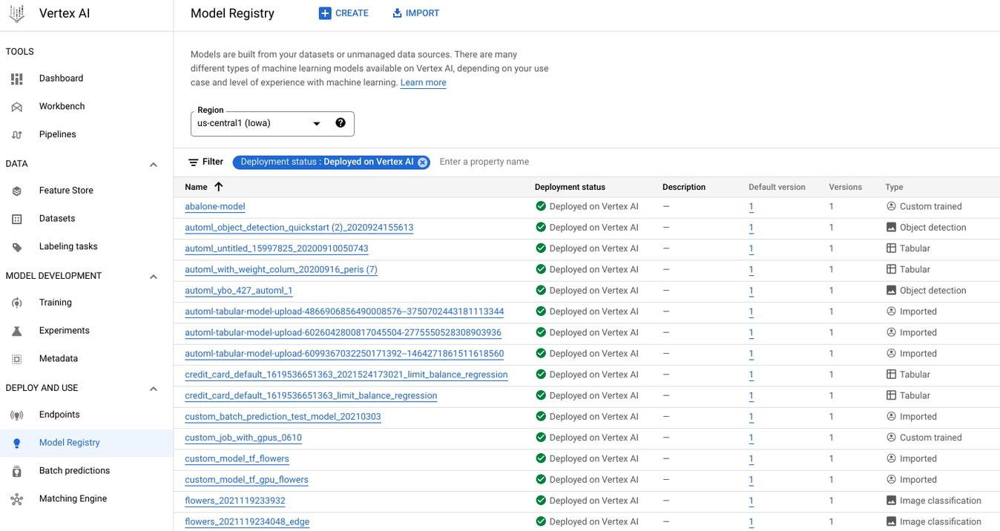
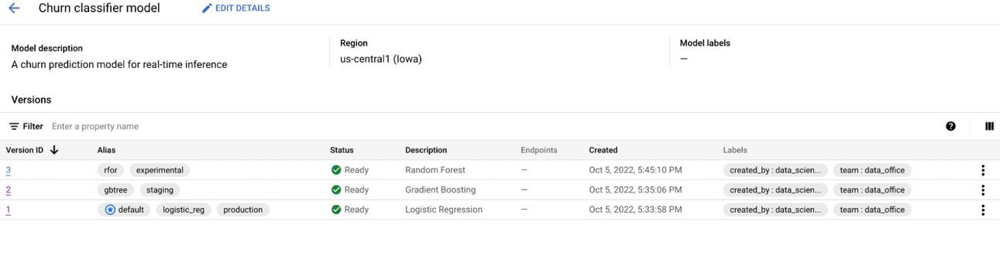
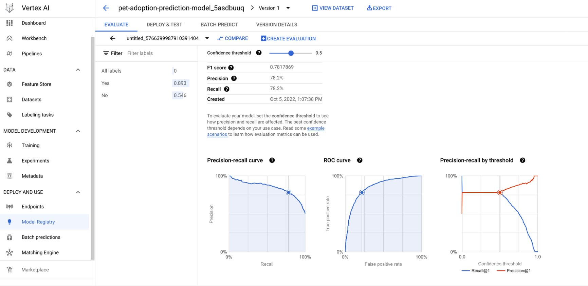

Many large institutions, including in the public sector, have a set of forecasts, predictions, or estimated statistical relationships (perhaps from a linear regression), that are key to their operations. In this post, I’ll run through how these institutions might benefit from a model registry of the kind that more digitally-savvy frontier firms are already using. And why, without one, an institution might be running model risk without even realising it.
If you’re not familiar with the idea of a model registry, it’s a service offered by all three major cloud providers (Amazon Web Services, Google Cloud Platform, and Microsoft Azure Platform) that allows you to lodge models in a (private) repository online. You can also custom build your own model registry (and much more) using the wonderful open source package MLflow.
What even is a model?
The word “model” is doing a lot of work here: it means a digital artefact that is (usually) trained on some data and which either contains coefficient estimates or can make predictions or both. A linear regression is an example of a model. In the data science world, it would usually mean a trained machine learning model that can make new predictions given new inputs. Perhaps the most commonly used file format for models is pickle, with extension .pkl.1
1 Of course, I’m not naïve, I know people are out there building models in Excel. What I really mean is “the file format most commonly used by data professionals for models is pickle”. Today, almost undoubtedly, .xlsx is the most common file format for models but we’ll see why that’s not satisfactory.
Want to see an example of a simple model in code, and the command to save it to disk? Scroll down or click here.
What is a model registry and why do I need it?
If you’ve never come across one before, you can think of a model registry as a way to store, monitor, and log models and their properties. The pithiest description is that model registries do for models what GitHub and version control do for code. This metaphor goes quite far, as model registries also support a kind of continuous integration where performance metrics can be generated automatically on model upload.
You can easily imagine a situation where this could be helpful. Let’s say you’re working with a model that you’ve trained locally on your computer. Let’s also say that this model is critical to some decision, analysis, or operation that is happening in your institution. You might need to be able to collaborate with others on it: perhaps they will update it, perhaps they need to use it to make a prediction, or perhaps they just need to know that it exists because your institution is serious about keeping track of the critical models that are in use. One way of working is that the person who built the model does all of this, but then you’re squeezing everything through a key person if you do that—it could easily lead to problems. So, okay, you could share the model via a network drive or send it over email, but there are a bunch of problems with this too. Unless you’re sending it to everyone in the institution, email is pretty ineffective, and everyone is bad at manually doing version control through naming on a network drive. Plus, you have to find a way to make consistent model meta-data (eg on the pros and cons of that modelling approach) stay with the model file: good luck with that on a shared network drive!
Model registries solve the problem of securely storing, monitoring, tracking, and sharing models between people. The schematic below, from this blog post, gives a sense of what their components are. Note that “endpoints” are places where the model gets deployed such that it can make predictions. This could be an API, but another endpoint could simply be users downloading them and running them locally.
Schematic of a model registry.
Reasons you might want to use a model registry include:
you want to have a central set of approved models that are logged. No more tracking models separately and inconsistently, via, say a spreadsheet—in a model registry, the log of models is the set of models.
you want to have meta-data about the model that is entwined with the model. Some basic meta-data, like the format of inputs and outputs, and even on performance, is usually included. This can be extended with information on a model’s limitations, strengths, and performance via something called a model card. For example, you can link model cards with models in the Amazon SageMaker model registry. You can see an example model card for one of Google’s models here. Model cards are a bit new but there is progress toward a consistent schema in this toolkit, which has an example based on classifying incomes in the census.
you want to be able to reproduce model results. Version controlling models in a registry buys you this.
you want to be able to know what you would have predicted in the past. For models, reproducibility across time can be essential to an institution: it’s not too much of a stretch to imagine there’s an enquiry or review where it is necessary to reproduce the exact model output that you had from a particular date.
you want to track the performance of a model over time. This is another advantage of versioning, and makes a task like assessing the quality of forecasts over time go from being a rum game of chasing down people, emails, and files to being as simple as running a short script.
you want others to be able to use your models. If there’s another team who rely on running your models, they no longer have to email you to ask—they just grab the latest version from the registry, and run it themselves. (Alternatively, the model can be deployed to an API where anyone in the institution can ping it for a prediction.)
you want to control access to the model. Sometimes, institutions need to provide different levels of access to different models, and model registries make this very possible, and at as granular a level as you like.
you want to make your models discoverable. This is a killer application. Models on network drives are not very discoverable, and their meta-data even less so. Model registries are designed to help people find the model they need.
you want to know how many people are using models, or do other auditing. Model registries are typically hosted, and the hosting service counts what is happening.
you want to automate reports about the number of models, their performance, how often they are used or updated, and so on. Once code is involved, everything becomes automatable!
you want to host models for free! Yes, just storing models in a registry is free for most cloud providers. (Other actions, such as deploying models to endpoints, do cost though.)
you want to make sure that you’re all using the same model. When you load a model from a registry, you pull it directly from the cloud repository—so there’s no chance of you accidentally changing a version that you’ve downloaded to your own machine and running something that’s inconsistent with the online version.
Not having some of these features comes with significant model risk. By model risk, I mean risks relating to models such as not knowing which model or model version was used in a particular decision or at a particular time, losing track of key models, people having access to sensitive models that they shouldn’t, not realising that a model’s performance has significantly degraded, and being unable to reproduce results that were used in critical decision making.
I said I would come back to models in Excel. In principle, you might (?) be able to store Excel models in a model registry and get some of these benefits (some, but definitely not all: you can’t deploy Excel to an API endpoint, for example, or use it with continuous integration). But Excel comes with so many other issues, I really don’t think you should. Some of the big ones are that they bundle code and data and model together, so you lose all the (not addressed in this post) benefits of version control, you lose control of data (very explicitly—Excel changes your data), and the code is repeated across cells, which makes some errors more likely.2 The bottom line is that if the model is doing anything important, it shouldn’t be in a spreadsheet.
2 The classic examples are not pulling a formula down to cover all rows or columns and hard-pasting numbers over formula cells.
Conclusion
If your institution relies on models in any way that’s even vaguely critical, it’s hard to see why you wouldn’t want most of the functionality of a model registry or the attendant reduction in risks it can provide. Additionally, this is pretty cheap (or even free), and, because cloud services are scriptable, very automatable, so it’s plausible that the extra functionality comes along with a boost in productivity. Model behaviour indeed!
Technical Appendix
A simple model in code as an example
The simplest model you can think of is something like the below, where we feed some data on the miles per gallon of cars into a regression.
import statsmodels.api as smimport statsmodels.formula.api as smflin_model = smf.ols("mpg ~ hp + C(cyl) + wt -1", data=mpg).fit()
This has a predict method, accessed via lin_model.predict().
Okay, here’s the important bit: to save this model locally on your computer (ready to upload to a model registru), it would be lin_model.save("lin_reg_model.pkl").
For this particular package, statsmodels, you can see a summary of the underlying model using .summary()
lin_model.summary()
OLS Regression Results
Dep. Variable:
mpg
R-squared:
0.857
Model:
OLS
Adj. R-squared:
0.836
Method:
Least Squares
F-statistic:
40.53
Date:
Tue, 18 Mar 2025
Prob (F-statistic):
4.87e-11
Time:
10:43:18
Log-Likelihood:
-71.235
No. Observations:
32
AIC:
152.5
Df Residuals:
27
BIC:
159.8
Df Model:
4
Covariance Type:
nonrobust
coef
std err
t
P>|t|
[0.025
0.975]
C(cyl)[4]
35.8460
2.041
17.563
0.000
31.658
40.034
C(cyl)[6]
32.4870
2.811
11.555
0.000
26.718
38.256
C(cyl)[8]
32.6601
3.835
8.516
0.000
24.791
40.530
hp
-0.0231
0.012
-1.934
0.064
-0.048
0.001
wt
-3.1814
0.720
-4.421
0.000
-4.658
-1.705
Omnibus:
2.972
Durbin-Watson:
1.790
Prob(Omnibus):
0.226
Jarque-Bera (JB):
1.864
Skew:
0.569
Prob(JB):
0.394
Kurtosis:
3.320
Cond. No.
1.90e+03
Notes: [1] Standard Errors assume that the covariance matrix of the errors is correctly specified. [2] The condition number is large, 1.9e+03. This might indicate that there are strong multicollinearity or other numerical problems.
from azure.ai.ml.entities import Modelfrom azure.ai.ml.constants import AssetTypesfile_model = Model( path="model.pkl",type=AssetTypes.CUSTOM_MODEL, name="local-file-example", description="Model created from local file.",)ml_client.models.create_or_update(file_model)
Although you can search for models in the user interface (see below for an example from Google), you can also search all models programmatically too. For example, in Azure, this is as simple as client.search_registered_models(order_by=["name ASC"]).
Loading models from the registry into your local workspace is similarly simple using, say, MLflow on Azure: model = mlflow.pyfunc.load_model(f"models:/{model_name}/Staging"). You can also deploy models online to an endpoint and query that too, and this is how the cloud providers typically assume you will use registered models.
The image below shows a view of a model registry in Google’s model registry, Vertex AI.

Screenshot showing the model registry page on Vertex AI.
You can see high level information such as the name, number of versions, default version, deployment status, and type. If you click through to one of those models, you get a more detailed view.

Screenshot showing a single model’s page in a Google model registry.
This view shows the labels applied to each version of a specific model, and more. One of the great features of a model registry is that performance can be automatically assessed (“continous integration”).
The image below shows an example of some metrics of this that live within the model registry:

Screenshot showing a single model’s performance metrics in Google model registry.
Metadata
Just as an example, here are some meta-data that might be associated with a model